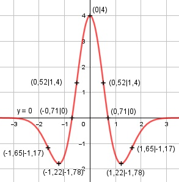

Aufgabe 146 f(x) = 4 * e-x2 * (1 - 2x2) Produktregel erste Ableitung: u = 1 - 2x2, u' = -4x v = 4 * e-x2 Kettenregel: v' = -2x * 4 * e-x2 = -8x * e-x2 f'(x) = -4x * 4 * e-x2 + (-8x) * e-x2 * (1 - 2x2) f'(x) = e-x2 * (-16x - 8x + 16x3) f'(x) = e-x2 * (16x3 - 24x) Produktregel zweite Ableitung: u = e-x2 Kettenregel: u' = -2x * e-x2 v = 16x3 - 24x, v' = 48x2 - 24 f''(x) = - 2x * e-x2 * (16x3 - 24x) + + (48x2 - 24) * e-x2 f''(x) = e-x2 * (-32x4 + 48x2 + 48x2 - 24) f''(x) = e-x2 * (-32x4 + 96x2 - 24) -32x4 + 96x2 - 24 f''(x) = ------------------- ex2 Zur Beurteilung, ob f'''(x) ≠ 0: (Begründung siehe Aufgabe 105) u = -32x4 + 96x2 - 24, u' = -128x3 + 96x u' -128x3 + 96x f'''(x) = --- = -------------- ≠ 0 v ex2 für alle x ≠ 0, ± √0,75 weil -128x3 + 96x = 0 -128x * (x2 - 0,75) = 0 | -128x = 0 |:-128 x1 = 0 x2 - 0,75 = 0 |+0,75 x2 = 0,75 |√ x1,2 = ± 0,866 Definitionsbereich: -∞ < x < ∞ Waagerechte Asymptote: 4 * (1 - 2x2) f(x) = 4 * e-x2 (1 - 2x2) = ---------------- ex2 geht gegen 0 für x --> ± ∞ Wertebereich: f(x) wird dann am größten, wenn x = 0 (Extrempunkt) f(0) = 4, und am kleinsten, wenn x = ± 1,22, f(±1,22) = -1,78 --> -1,78 ≤ f(x) ≤ 4 Symmetrie zur y-Achse bzw. zum Punkt (0|0): f(-x) = 4 * e-(-x)2 * (1 - 2*(-x)2) f(-x) = 4 * e-x2 * (1 - 2x2) = f(x) --> Achsensymmetrie -f(-x) = -(4 * e-x2 * (1 - 2x2)) ≠ f(x) --> keine Punktsymmetrie Nullstellen: f(x) = 0 4 * e-x2 * (1 - 2x2) = 0 |:4 * e-x2 1 - 2x2 = 0|+2x2 2x2 = 1 | :2 x2 = 0,5 |√ x1,2 = ± 0,71 N1(0,71|0), N2(-1,71|0) Schnittpunkt mit der y-Achse: x = 0 f(0) = 4 * e-02 * (1 - 2 * 02) = 4 Sy(0|4) Extrempunkte: f'(x) = 0 e-x2 * (16x3 - 24x) = 0 |:e-x2 16x2 - 24x = 0 8x * (2x2 - 3) = 0 8x = 0 | :8 x1 = 0, f(0) = 4 2x2 - 3 = 0| +3 2x2 = 3 |:2 x2 = 1,5 |ⱱ x2,3 = ± 1,22 x2 = 1,22 f(1,22) = 4 * e-1,222 * (1 - 2 * 1,222) = -1,78 Wegen Achsensymmetrie f(-1,22) = -1,78 f''(0) = e-02 * (-32*04 + 96*02 - 24) < 0 --> Hochpunkt (0|4) f''(1,22) = e-1,722 * (-32 * 1,224 + 96 * 1,222 - 24) > 0 --> Tiefpunkt (1,22|-1,78) Wegen Achsensymmetrie --> Tiefpunkt (-1,22|-1,78) Wendepunkte: f''(0) = 0 e-x2 * (-32x4 + 96x2 - 24) = 0 |:e-x2 -32x4 + 96x2 - 24 = 0 Substitution x2 = z -32z2 + 96z - 24 = 0 A, B, C - Formel: A = -32, B = 96, C = -24 z1,2 = z1,2 = z1,2 = -96 ± 78,38 z1,2 = --------------- -64 z1 = 0,275 --> x1,22 = 0,275 |ⱱ --> x1,2 = ± 0,52 z2 = 2,72 --> x3,42 = 2,72 |ⱱ --> x3,4 = ± 1,65 x1 = 0,52 f(0,52) = 4 * e-0,522 * (1 - 2 * 0,522) = 1,4 --> WP1(0,52|1,4) Wegen Achsensymmetrie --> WP2(-0,52|1,4) x2 = 1,65 f(1,65) = 4 * e-1,652 * (1 - 2 * 1,652) = -1,17 --> WP3(1,65|-1,17) Wegen Achsensymmetrie --> WP4(1,65|-1,17) Graph:
